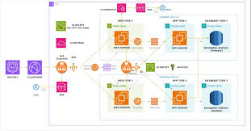

Multitier Architecture is a software design pattern that separates application functionality into distinct, physically or logically separated layers. The most common version is the three-tier architecture, which divides an application into three layers: the top tier (client tier) which is the user interface; the middle tier (business logic tier) which processes data and applies rules; and the bottom tier (information/data tier) which stores and manages data.
This separation makes applications easier to maintain, scale, and secure. For example, in a banking app — the website you see is the client tier, the server processing your transactions is the middle tier, and the database storing your account information is the data tier.